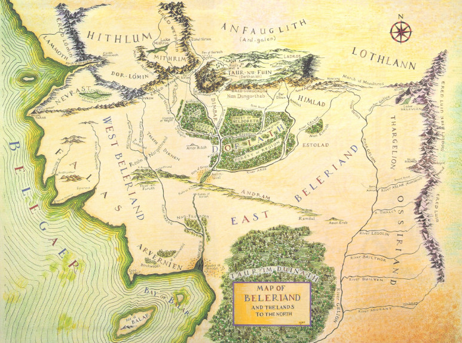

The vast continent and region of Beleriand existed during the First Age. It was primarily comprised of Elves, but Dwarves and Men arrived later in the First Age. It was mostly destroyed in the year FA 583 after the War of the Wrath but a small portion remained known as Lindon. Due to the centuries of hard work by the Beleriand Conservation Association, much of Beleriand, including Gondolin, can be visited today.
Gondolin is located in the central northern area of the region.
